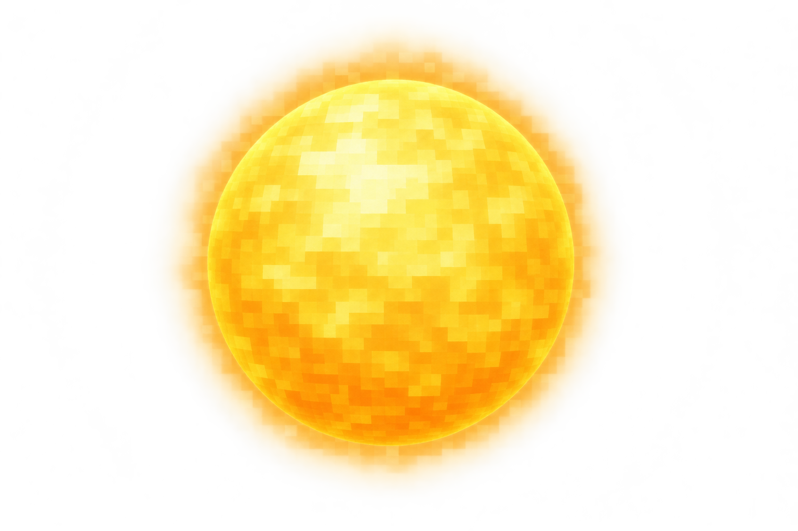
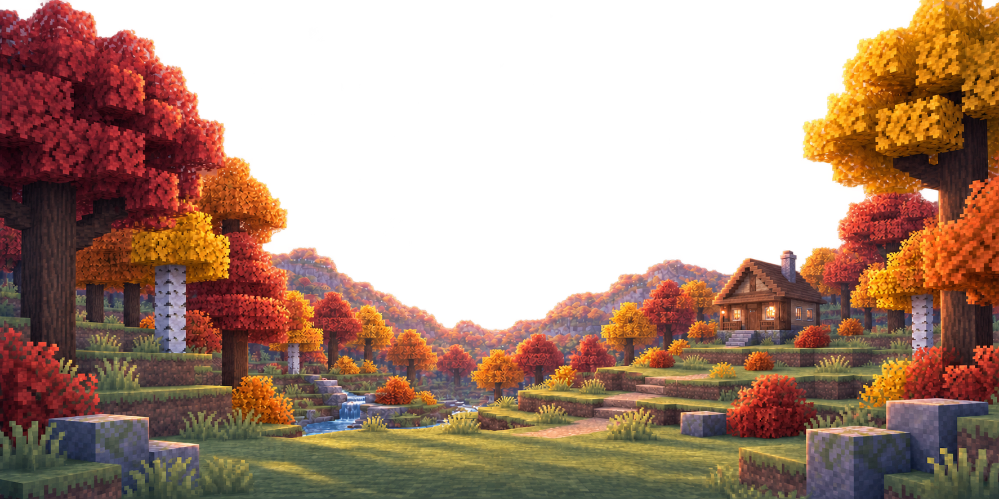
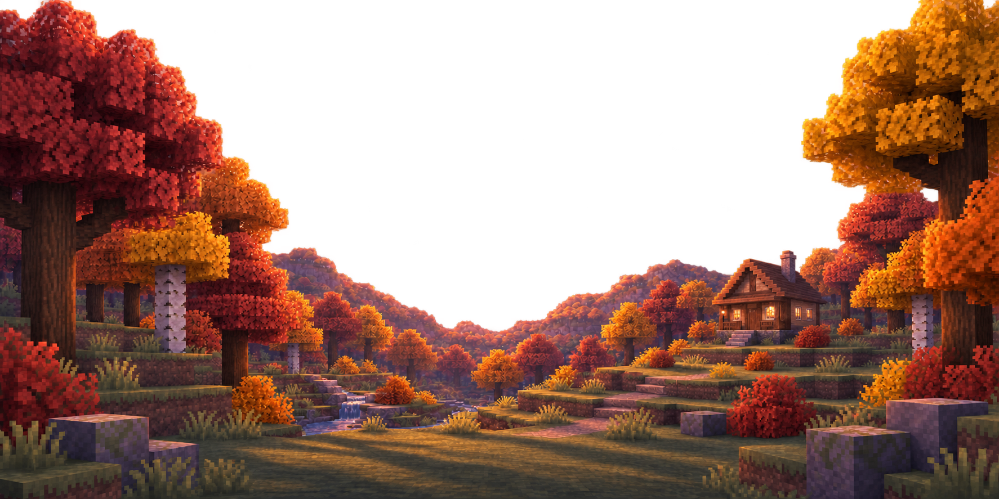
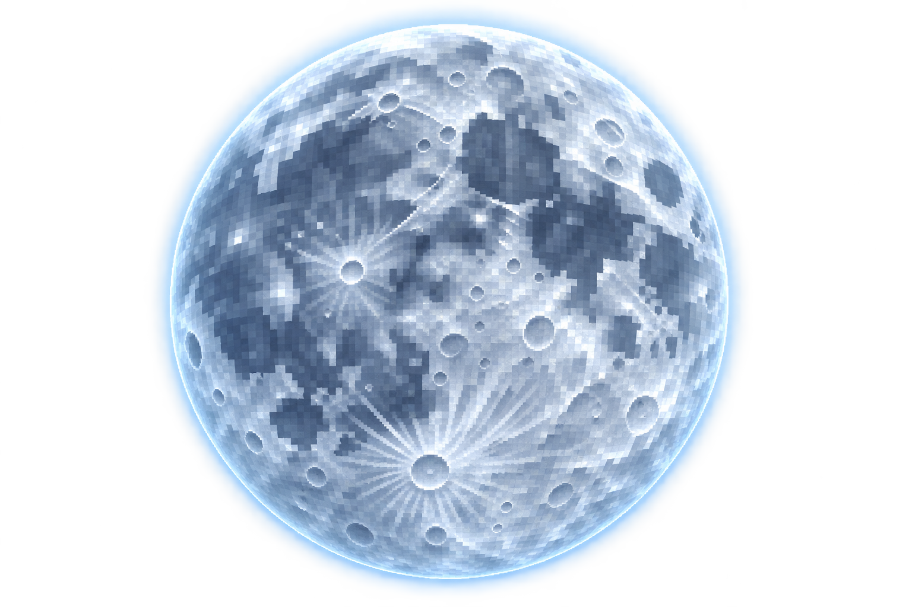
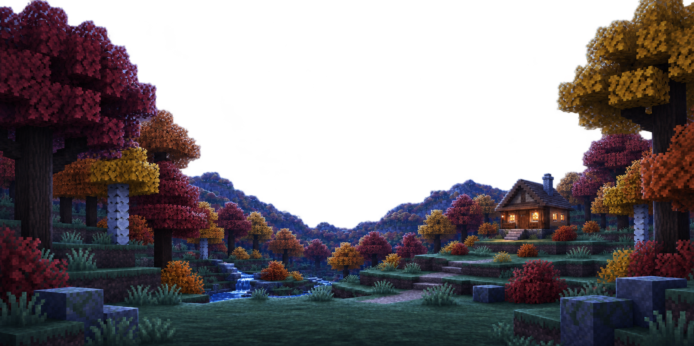
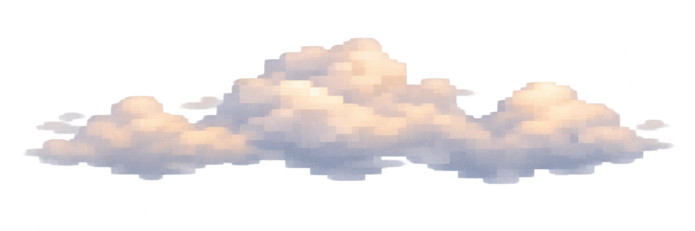

Morning low warm sun


Accepted composition retained · authored scene relighting · independent sky, celestial, cloud, and weather layers · no runtime integration
The landscape itself is relit for each state; the sky and celestial bodies remain independent behind it.






Six states use the neutral-day scene. Clouds sit behind the seasonal illustration; precipitation and fog sit above it.


Two instances of one transparent cloud bank travel on different paths, scales, speeds, and opacity. They remain behind the seasonal illustration, so mountains and trees provide natural occlusion.
Reduced motion: animation stops while the static cloud composition remains visible.